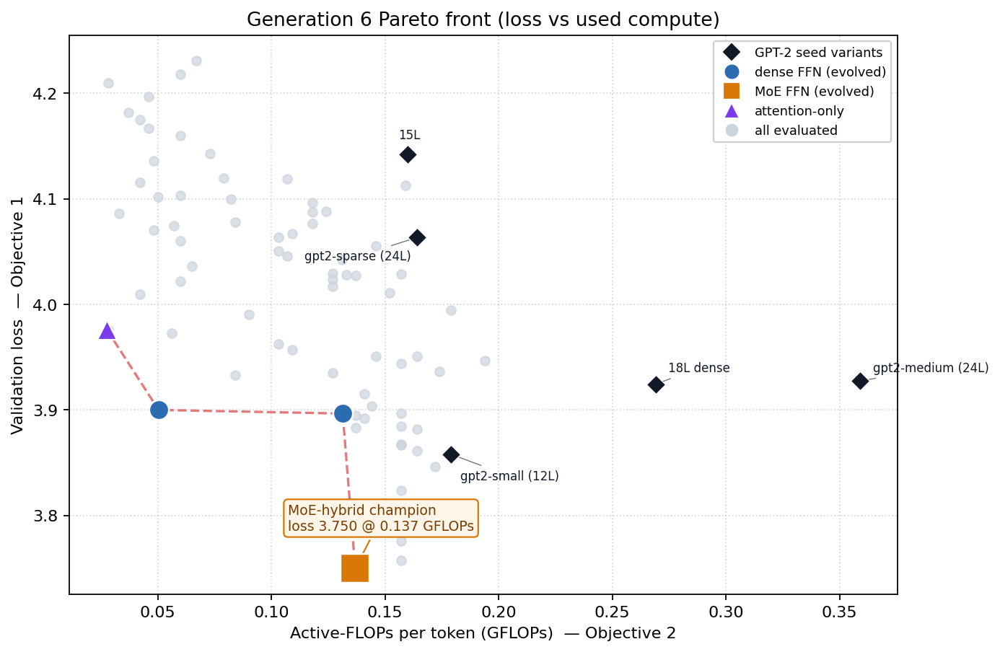
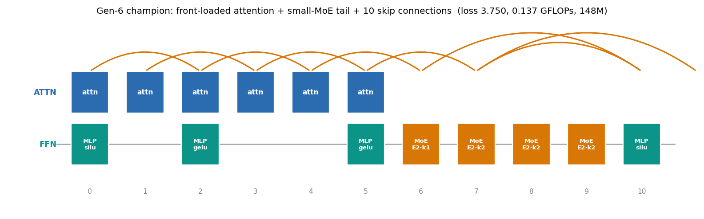

An Agentic Optimizer Rediscovers Elements of Modern LLM Architectures, Starting from GPT-2
This is an interim snapshot of an ongoing run, generation 6 at the time of writing. Results below are intermediate and will be updated as the search continues.
Several of the recognizable architectural moves separating GPT-2 (2019) from today’s open models (Qwen, Kimi K2, DeepSeek-V3) are well understood: attention concentrated in the early layers, a departure from the rigid one-to-one interleaving of attention and feed-forward blocks, dense residual shortcuts, and above all the replacement of the dense feed-forward block by a sparsely-activated Mixture-of-Experts (MoE). Each of these was discovered, named, and published by a different group over the last five years. These are of course not the whole story: modern models also differ in positional encoding, normalization, attention variants, gating, and fine-grained expert design, none of which are in scope here.
A natural question follows. If an optimizer were handed nothing but GPT-2 as a starting point and a single instruction, reach the lowest loss for the least compute, would it re-derive some of the same moves on its own? Six generations in, it has.
The optimization problem
Every candidate model is represented not as code but as a Heterogeneous Directed Acyclic Graph (H-DAG) of primitive nodes (embeddings, causal attention, layer-norm, activation, dense or MoE feed-forward, residual sums), which is compiled on the fly into a trainable PyTorch module. The entire graph is encoded as a single continuous vector x ∈ [0,1]97, whose coordinates control:
- the depth of the model (6–30 layers);
- per-layer presence of an attention block and of a feed-forward block;
- the activation family (GELU / SiLU / ReLU);
- long-range skip connections (a block’s output re-added into the residual stream of a later block);
- for each feed-forward block, its number of experts (1 = dense, otherwise 2/4/8) and its top-k routing (1 or 2 active experts).
Two objectives are minimized simultaneously, producing a Pareto front rather than a single answer:
- Objective 1: validation cross-entropy loss on WikiText-103.
- Objective 2: active-FLOPs per token, i.e. only the compute that actually runs (attention plus the top-k active experts of each block). Total parameter count is deliberately not an objective; only used compute is charged.
This second choice is the crucial one. Under a parameter-count objective a MoE model is dominated by construction (it stores many experts for the compute of one) and would never be selected. Under an active-FLOPs objective the economics invert: extra experts add capacity and lower loss at almost no compute cost, so the search is finally free to reach for them. Three hard constraints keep the search honest: peak training memory must fit a 12 GB GPU (which is what bounds MoE size), loss must stay below 4.5, and at least three blocks must be active. A candidate that violates any of these is rejected by design rather than assigned a fake score.
The optimization algorithm
The search is driven by Metis-Agent, an autonomous large-language-model agent used as the optimizer itself. Each generation the agent is shown the current Pareto front, the objective history, and structural diagnostics, and is asked to write its own NumPy optimization code (differential evolution, PCA-guided crossover and metamodel-assisted search, or a surrogate-inverse model that maps desired objectives back to decision vectors), then execute it to propose the next twenty candidates. The dimensionality-reduction and surrogate operators in this toolbox draw directly on earlier work on PCA-enhanced, metamodel-assisted evolutionary algorithms; the idea of using an LLM as the optimizer that emits its own search procedure follows the lineage of OPRO and FunSearch. Here the agent is backed by Claude and retains memory of its own past strategies across generations.
One caveat should be stated plainly. The optimizer is itself a large language model whose training data includes the very papers cited below, and the prompt it receives carries a domain-knowledge section that describes several of these moves directly, including the observation that MoE buys loss cheaply under an active-FLOPs objective. Neither the search space nor the objectives name any of them, and no specific architecture is ever proposed, but the agent is not working blind. The results are therefore best read as evidence that the compute-per-token objective makes these moves attractive and that an LLM-guided search assembles them quickly, not as blank-slate convergence.
Two further mechanisms make the search practical. First, Lamarckian weight inheritance: a new candidate copies weight tensors in place from its nearest Pareto-front ancestor, so offspring resume training rather than starting cold, in the same multi-objective, morphism-driven spirit as LEMONADE. Second, a saturation monitor watches every gene across the population and, whenever one collapses to a single value for two generations, forces a couple of exploration individuals across its threshold, preventing the search from silently freezing on, for example, a single activation function.
What the agent found
Starting from five GPT-2 seeds and fifteen diverse explorers, the front advanced steadily and, by the sixth generation, produced a decisive result.

The champion is worth reading node by node.

That single architecture assembles four ideas that were each published separately: attention front-loading is the central finding of the Sandwich Transformer; the abandonment of one-to-one attention–feed-forward interleaving is the PAR Transformer; the sparse-expert feed-forward is Mixture-of-Experts, the defining feature of the current generation of open models; and dense residual shortcuts are the oldest idea of the four. None of them are named in the search space or the objectives, which expose only generic genes and a loss-versus-compute trade-off. Several are described in the agent’s domain-knowledge prompt, however, and per the caveat above its own priors cannot be ruled out either. What the search contributes is the selection and the proportions: which of these moves to combine, how many of each, and where in the stack.
What this is, and what it is not
The honest reading is that no new architecture was discovered: every ingredient the search converged on already exists in the literature, and the champion is a recombination of known parts. What is interesting is the mode of arrival: a compute objective and an autonomous agent, given only GPT-2, independently reconstruct the trajectory the field took toward modern models, including the specific inversion (MoE becomes attractive only once compute rather than parameters is the currency) that motivated MoE in the first place. And it is reconstructed in a week rather than the years the field spent, without a human specifying any particular architecture. It is a rediscovery, not a discovery: an intermediate demonstration that several of the design moves separating GPT-2 from modern models are convergent under the right objective, and that an agentic search will find them, unaided, without a map.
Whether the same machinery, as this run continues, can produce something genuinely new rather than rediscovered is the open question, and the subject of a follow-up post.